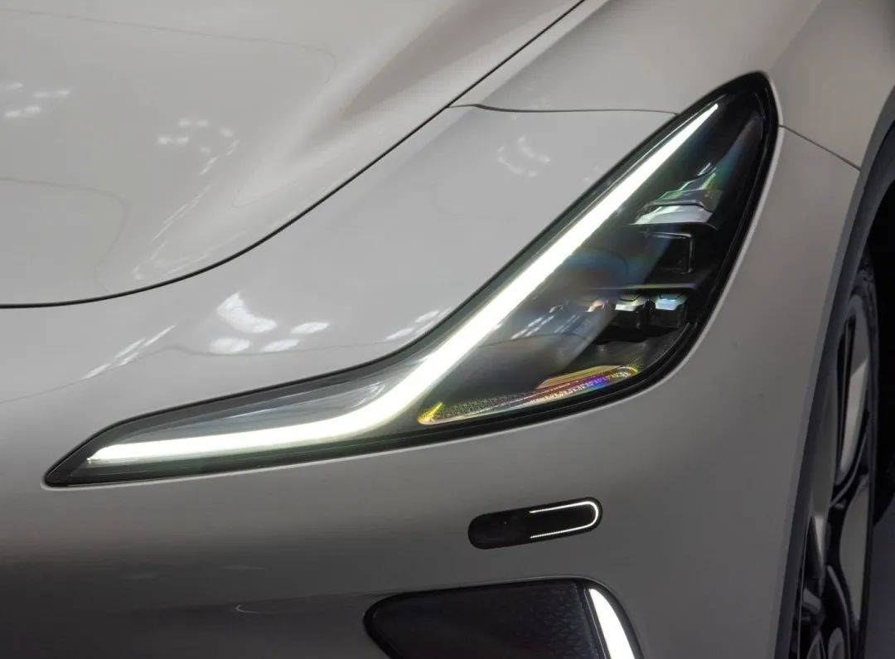
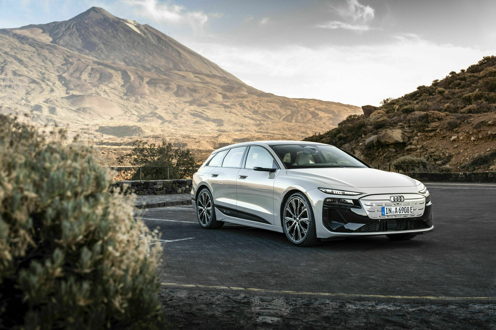
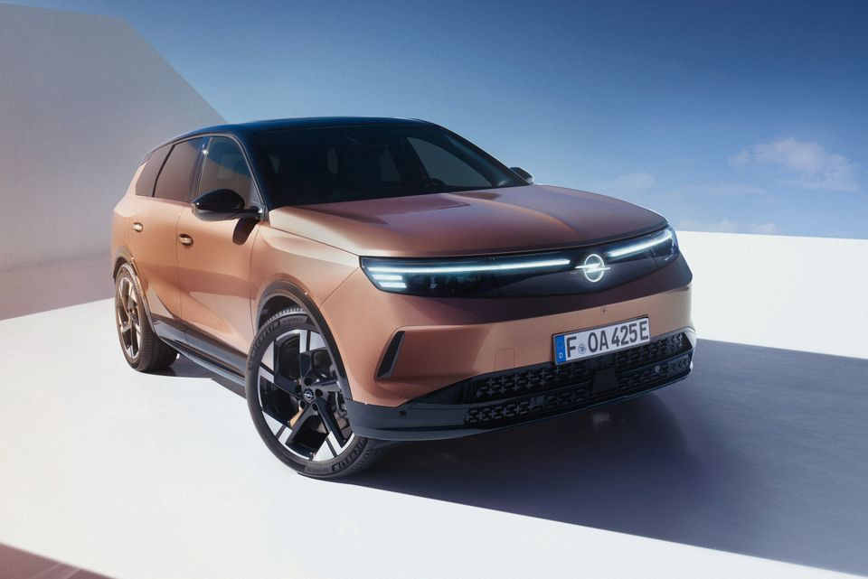

好看的车灯，究竟好看在哪里？
有些车只露出两道灯，我们就认得出品牌。灯光给人的印象，和线条、间隙、明暗怎样安排有关。
先看选材依据：2023年车灯评选将极星4、智己LS7选为外资与自主两个类别的“年度颜值车灯”。2025年DVN前灯投票中，Grandland占26%，Audi A6 Avant e-tron占23%；后者综合设计与技术，不能当成纯审美排名。再加上原来讨论的Volvo EX90，我们来比较五种不同的做法。

极星4：空隙让灯显得轻。
先认识“统一与变化”：相似的形式建立秩序，不同的细节避免单调。上下两道灯带，外侧分别向上挑、向下折，中间留着清楚的间隙。视线先抓住细长轮廓，灯组就少了厚重感。周围的大块平整车身，又让灯的细节突出。简洁要看安排，不能只数零件多少。

智己LS7：转折让线条流动起来。
“视觉动势”指形状引导视线的方向。灯带先横向延伸，再向外侧抬升；转弯处有弧度，眼睛沿着线走，不会在折角处突然停住。它的走势又接上引擎盖与翼子板附近的线。所谓流畅，就有了方向连续、转折顺、局部与整体协调这些具体原因。

Audi A6 Avant e-tron：把主次分清楚。
“明度”是亮暗程度，亮暗差异能建立视觉主次。上面的日行灯很细，下面较大的照明部件融入黑色面罩。设计师解释，这能保留较平、较宽的车头印象。明亮轮廓先被看见，复杂部件退到背景。就像海报突出标题、弱化次要信息，每样都抢眼，反而难留下清楚印象。

Opel Grandland：让两盏灯连成一个前脸。
“对称均衡”是中心两侧的形状和视觉分量相互对应。横向灯光、左右灯和发光车标进入同一片深色区域。视线顺着光走过车头，中间的标志又给它一个停留点。左右呼应、中心明确，所以显得整齐、完整。内部照明技术参数不能直接换算成美感。

Volvo EX90：小块重复，大形清楚。
“节奏”是重复与变化形成的视觉次序。近看，横向灯带由多个小单元组成；远看，它们共同维持“雷神之锤”的轮廓。细节有次序，大形容易记住。直线与直角也让它比LS7的曲线更显利落。这种差别来自具体轮廓，不必变成谁一定优于谁。
下次看车灯，先看线条往哪里走、亮暗怎样分工、部件之间留了多少空间，以及灯有没有接上整辆车的形状。“好看”的原因，就能从图里慢慢找出来。
#工业设计 #车灯设计 #设计美学 #美学原理
图片来源与产品版本见完整长文。此版供图文发布编辑，不混入研究附录。字数需按当前账号发布限制确认。